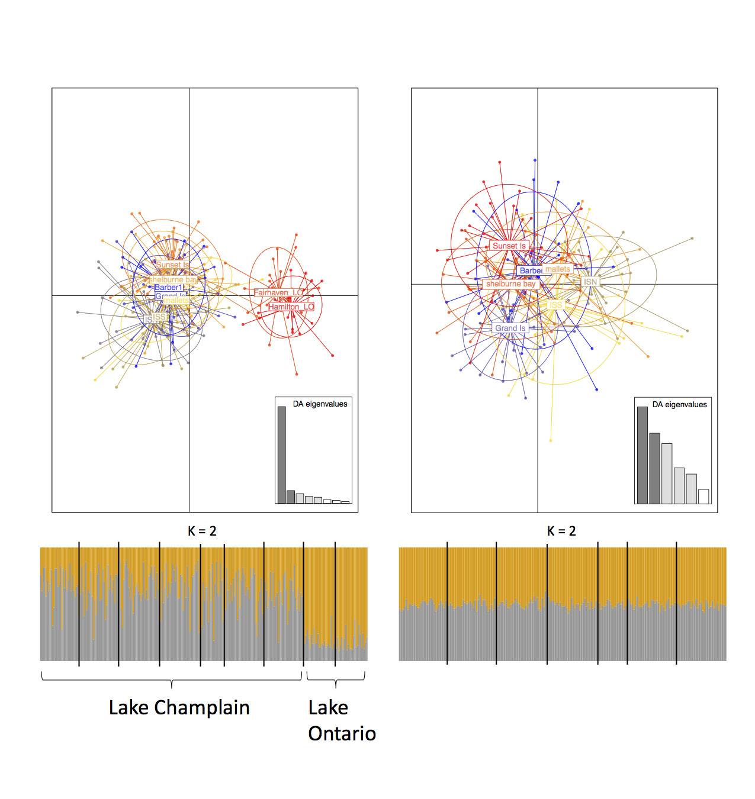
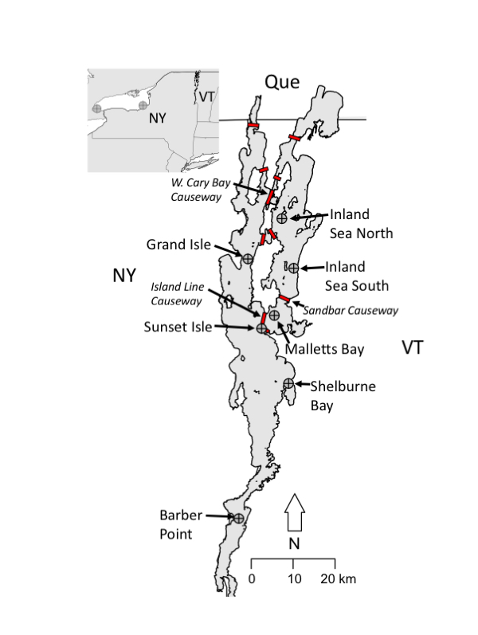
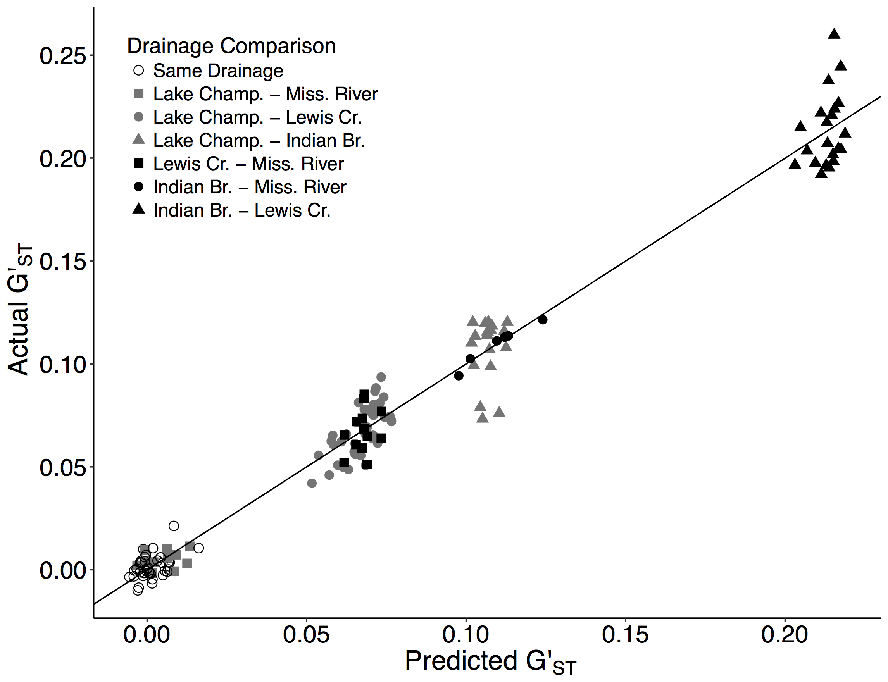
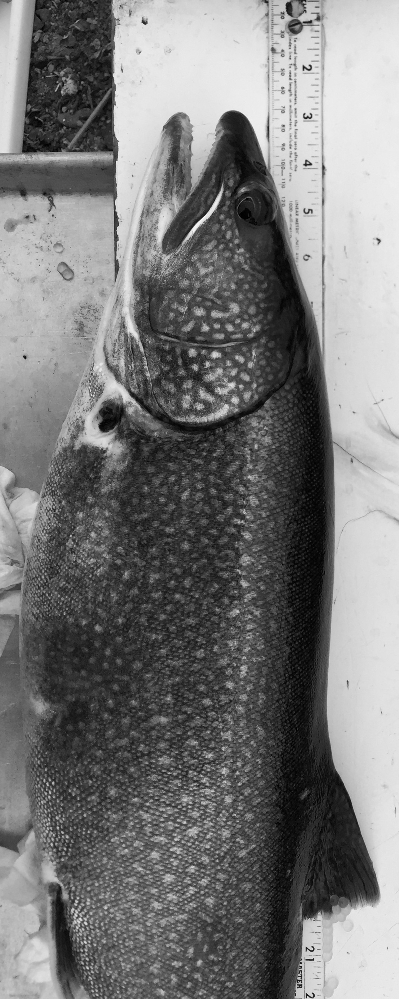

EDUCATION
University of Vermont, Burlington, VT
- 2018 - Ph.D. in Biology; Genetic and demographic consequences of lake and river habitat fragmentation on fishes in Vermont Advisor: J. Ellen Marsden
- 2015 - M.Sc. in Natural Resources (Aquatic Ecology and Watershed Science) M.Sc. Thesis, Fixed versus plastic partial migration of the aquatic macroinvertebrate, Mysis diluviana, in Lake Champlain. Advisor: Jason D. Stockwell
Kent State University, Kent, OH
- 2012 - BS in Organismal Biology
PUBLICATIONS
 orcid.org/0000-0002-1212-0435
orcid.org/0000-0002-1212-0435Yi, X, Schraidt, CE, Sparks, MM, Euclide, PT, Ruetz, CR, Höök, TO, Christie, MR. (In Press) Rapid, parallel recovery of commercially important fish populations in response to environmental remediation. Proceedings B.
Euclide, PT, Khul, H, Wilson, CC, Scribner, K, Miller, L, Stott, W, Larson, WA. (2024). Human impacts on Great Lakes Walleye Sander vitreus structure, diversity and local adaptation. Molecular Ecology.
Kuhl, H, Euclide, PT, Klopp C , Cabau C, Zahm M, Roques C, Iampietro C, Claire Kuchly C, Donnadieu C, Feron R, Parrinello H, Poncet C, Jaffrelo L, Confolent C, Wen M, Jouanno E, Bestin A12, Haffray P, Morvezen R, Rocha de Almeida T, Lecocq T, Schaerlinger B, Chardard D, Żarski D, Larson W, Postlethwait JH, Timirkhanov S, Kloas W, Wuertz S, Matthias Stöck M, Y Guiguen. 2024. Multi-genome comparisons reveal gain-and-loss evolution of the anti-Mullerian hormone receptor type 2 gene, an old master sex determining gene, in Percidae. BMC Biology.
Euclide, PT, Perry, C, Donabauer, SB, Greier, A, Hӧӧk, T. 2024. What’s good for fish is good for fishes: Interspecific consistency of growth, condition, and abundance among glacier lakes. North American Journal of Fisheries Management.
Euclide, PT, Larson, WA, Shi, Y, Gruenthal, K, Christensen, K, Seeb, J, Seeb, L. 2023. Conserved islands of divergence associated with adaptive variation in sockeye salmon are maintained by multiple mechanisms. Molecular Ecology.
Johnson, A, Zipfel, K, Hallerman, E, Massure, W, Euclide, PT, Welsh, A. 2023. Genomic evaluation of native Walleye in the Appalachian Region and the effects of stocking. Transactions of the American Fisheries Society.
Euclide, PT, Larson, WA, Bootsma, ML, Faust, M, Miller, L, Scribner, KT, Stott, W, Wilson, CC, Latch, EK. 2022. A new GTSeq resource to facilitate multijurisdictional research and management of walleye Sander vitreus. Ecology and Evolution.
Shi, Y, Homola, J, Euclide, PT, Isermann, D, Caroffino, D, McPhee, M, Larson, W. 2022. High-density genomic data reveal fine-scale population structure and pronounced islands of adaptive divergence in lake whitefish (Coregonus clupeaformis) from Lake Michigan. Evolutionary Applications.
Euclide, PT, Schmitt, JD, Kraus, RT, Cook, A, Markham, J. 2022. Genome-wide genetic diversity may help identify fine-scale genetic structure among Lake Whitefish spawning stocks in Lake Erie. Journal of Great Lakes Research.
Euclide, PT, Jasonowicz, A, Sitar, S, Fischer, G, Goetz, FW. 2022. Further evidence from common garden rearing experiments of heritable traits separating lean and siscowet lake charr (Salvelinus namaycush) ecotypes. Molecular Ecology. 10.1111/mec.16492
Thorstensen, M, Euclide, PT, Jeffrey, J., Shi, Y, Treberg, J, Watkinson, D, Enders, E, Larson, W, Kobayashi, Y., Jeffries, K. 2022. A chromosomal inversion may facilitate adaptation despite periodic gene flow in a freshwater fish. Ecology and Evolution. http://doi.org/10.1002/ece3.8898
Euclide, PT, Robinson, JM, MacDougall, T, Faust, MD, Bootsma, M, Chen, K, Larson, WA, Ludsin, Marschall, EA, Scribner, KT, Stott, W, Wilson, CC. 2021. Using Genomic Data to Guide Walleye Management in the Great Lakes. in Bruner, JC, and DeBruyne, RL, editors. Ecology, Management, and Culture of Sauger, Walleye, and Yellow Perch.
Euclide, PT, MacDougall, T, Robinson, JM, Faust, MD, Wilson, CC, Chen, K, Marschall, EA, Larson, W, Ludsin, S (2021). Mixed‐stock analysis using Rapture genotyping to evaluate stock‐specific exploitation of a walleye population despite weak genetic structure. Evolutionary Applications, 00, eva.13209.
Euclide, PT, Lor, Y, Spear, MJ, Tajjioui, T, Vander Zanden, J, Larson, WA, Amberg, J (In Press). Efficient environmental DNA biodiversity assessment of nine north-temperate lakes and rivers with established monitoring programs. Diversity and Distributions
Bootsma, ML, Miller, L, Sass, GG, Euclide, PT, Larson, WA (2020). The ghosts of propagation past: haplotype information clarifies the relative influence of stocking history and phylogeographic processes on contemporary population structure of walleye (Sander vitreus). Evolutionary Applications
Riginos, C, Crandall, E, Liggins, L, Gaither, MR, Ewing, RB, Meyer, C, Andrews, KR, Euclide, PT, Titus, BM, Overgaard Therkildsen, N, Salces -Castellano, A, Stewart, LC, Toonen, RJ, Deck, J. 2020. Building a Global Genomics Observatory: using GEOME (the Genomic Observatories Metadatabase) to expedite and improve deposition and retrieval of genetic data and metadata for biodiversity research. Molecular Ecology Resources.
Robinson, KF, Bronte, CR, Bunnell, DB, Euclide, PT, Hondorp, D, Kornis, MS, Riley, S, Vinson, M, Volkel, SL, Weidel, B. 2020. A synthesis of the biology and ecology of sculpin species in the Laurentian Great Lakes and implications for the adaptive capacity of the benthic ecosystem. Reviews in Fisheries Science & Aquaculture.
Euclide, PT, Ruzich J, Hansen, SP, Rowe, D, Zorn, TG, Larson, WA. 2020. Genetic structure of Smallmouth Bass (Micropterus dolomieu) in Lake Michigan and the Upper Mississippi drainages relates to habitat, distance, and drainage boundaries. Transactions of the American Fisheries Society.
Euclide, PT, Pientka, B, Marsden, JE. In 2020. Genetic versus demographic stock structure of rainbow smelt in a large fragmented lake. Journal of Great Lakes Research.
Euclide, PT, Kilpatrick, CW, Marsden, JE. 2019. Genetic structure of lake whitefish (Coregonus clupeaformis) in Lake Champlain, Vermont 100 years after commercial fishery closure. Journal of Great Lake Research.
Euclide, PT, McKinney, GJ, Bootsma, M, Tarsa, T, Meek, MH, Larson, WA. 2019. Attack of the PCR clones: Rates of clonality have little effect on RAD-seq genotype calls. Molecular Ecology Resources.
Feron, R, Zahm, M, Cabu, C, Klopp, C, Roques, C, Bouchex, O, Eche, C, Valiere, S, Donnadieu, C, Haffray, P, Bestin, A, Morvezen, R, Acloque, H, Euclide, PT, Wen, M, Jouano, E, Schartl, M, Postlethwait, JH, Schraidt, C, Christie, MR, Larson, WA, Herpin, A, and Guiguen, Y. 2019. Characterization of a Y-specific duplication / insertion of the anti-Mullerian hormone type II receptor gene based on a chromosome-scale genome assembly of yellow perch, Perca flavescens. Molecular Ecology Resources.
Euclide, PT, Marsden, JE. 2018. Role of drainage and barriers in the genetic structuring of a tessellated darter population. Conservation Genetics. 19: 1379-1392.
Jude, DJ, Rudstam, LG, Holda, TJ, Watkins, JM, Euclide, PT, Balcerd, MD. 2018. Trends in Mysis diluviana abundance in the Great Lakes, 2006-2016. Journal of Great Lakes Research. 44: 590-599
Euclide, PT, Flores, NM, Wargo, MJ, Kilpatrick, CW, Marsden, JE. 2017. Lack of population genetic structure of slimy sculpin in a large, fragmented lake. Ecology of Freshwater Fish. 27: 699-709.
Euclide, PT, Hansson, S, Stockwell, JD. 2016. Partial diel vertical migration in an omnivorous macroinvertebrate, Mysis diluviana. Hydrobiologia. doi:10.1007/s10750-016-2982-5. 787: 387-396.
Euclide, PT, Stockwell, JD. 2015. Effect of gut content on δ15N, δ13C, and C:N of experimentally- fed Mysis diluvaiana. Journal of Great Lake Research. 41: 926-929.
SELECTED REAEARCH PRESENTATIONS
Chandika, RG, Tallon A, Euclide, PT, Navarro D, Ott-Conn D, Blanchong J, DeYoung R, Walsh D, Latch E. 2023. A novel genomic resource (GT-seq) for white-tailed deer to inform management of chronic wasting disease. The wildlife Society. [oral presentation]
Euclide, PT, Yin, X, Clapp, C, Ruetz, C, Hook, T, Christie, M. 2023. Genome-wide differences between drowned river mouth and main-basin Lake Michigan Yellow Perch. The American Fisheries Society. [oral presentation]
Euclide, PT, Yin, X, Clapp, C, Ruetz, C, Hook, T, Christie, M. 2022. Yellow perch population and habitat use in Lake Michigan. Lake Michigan Technical Committee. [oral presentation]
Euclide, PT, Yin, X, Ruetz, C, Hook, T, Christie, M. 2022. Genome re-sequencing reveals genetic differences between Lake Michigan and drowned river mouth yellow perch. Joint Aquatic Sciences Meeting. [oral presentation]
Euclide, PT, Dixon, B, Faust, M, Miller, L, Stott, W, Scribner, KT, Wilson, CC, Larson, WA 2020. Genomics provides a more nuanced picture of walleye population structure in the Great Lakes. International Association of Great Lakes Research. Virtual conference [oral presentation]
Euclide, PT, Ludsin, SA, Marschall, EA, Chen, K, Robinson, J, Faust, M, MacDougall, TM, Wilson, C, Larson, WA, 2019. Stock Structure and Contribution of West and East Basin Walleye to Recreational and Commercial Fisheries in Lake Erie. American Fisheries Society, Reno Nevada. [oral presentation]
Euclide, PT, Bootsma, M, Meek, M, McKinney, G, Larson, W 2019. Attack of the clones The influence of PCR clones on RAD-seq genotype calls. International Association of Great Lakes Research. Brockport, New York. [oral presentation]
Euclide, PT, Ruzich, J, Hansen, S, Rowe, D, Zorn, T, Larson, W 2019. Population genetic structure of smallmouth bass in inland Wisconsin and Lake Michigan. Wisconsin American Fisheries Society. Greenbay Wisconsin. [oral presentation]
Euclide, PT, Larson, W 2018. The current state of walleye genomic research in Lake Erie. Lake Erie -Inland Waters Annual Review. Columbus Ohio. [oral presentation]
Euclide, PT, Marsden, JE 2018. Role of drainage and barriers in the genetic structuring of a tessellated darter metapopulation. Lake Champlain Research Conference. Burlington, Vermont [oral presentation]
Euclide, PT, Marsden, JE 2017. Movement of walleye in Lake Champlain: forty years of mark-recapture data. International Association of Great Lakes Research 2017 meeting. Detroit, Michigan [oral presentation]
Euclide, PT, Marsden, JE, Wargo, MJ, Flores, NM, Kilpatrick, CW 2017. Genetic structure of slimy sculpin (Cottus cognatus) populations in lakes. Canadian Conference For Fisheries Research, Montreal, Quebec. [oral presentation]
Euclide, PT, Parent, T, Gonzalez, E, Flores, NM, Wargo, MJ, Kilpatrick, CW, Marsden, JE 2015. Effect of Fish Dispersal Ability on Sensitivity to Habitat Fragmentation in a Large Lake. International Association of Great Lakes Research. Guelph, Ontario. [oral presentation]
Euclide, PT, Parent, T, Gonzalez, E, Flores, NM, Wargo, MJ, Kilpatrick, CW, Marsden, JE 2015. Effect of Fish Dispersal Ability on Sensitivity to Habitat Fragmentation in a Large Lake. American Fisheries Society meeting. Portland, Oregon. [oral presentation]
Euclide, PT, Strayer, N, Stockwell, JD. 2015. Is Mysis in decline in the Laruentian Great Lakes?. 2015 International Association of Great Lakes Research 2015 meeting. Burlington, Vermont [poster]
Euclide, PT, Stockwell, JD. 2014. Fixed versus plastic partial migration of the aquatic macroinvertebrate, Mysis diluviana, in Lake Champlain. 2014 Joint Aquatic Sciences Meeting. Portland, Oregon [poster]
Euclide, PT, Stockwell, JD. 2013. Physiological plasticity in the diel vertical migration of Mysis diluviana. RSENR Graduate Student Research Symposium, Vermont [oral presentation]
Euclide, PT, Stockwell, JD. 2013. Physiological plasticity in the diel vertical migration of Mysis diluviana. University of Vermont Student Research Conference, Vermont [oral presentation]
Euclide, PT, Stockwell, JD. 2013. Physiological plasticity in the diel vertical migration of Mysis diluviana. 2013 Lake Champlain Research Consortium Student Symposium [oral presentation]
INVITED TALKS
Euclide, PT. 2024. Human impacts on the recent evolutionary history of walleye in the Great Lakes. Paul H. O’Neill School of Public & Environmental Affairs, Indiana University.
Euclide, PT. 2024. Human impacts on the recent evolutionary history of fishes in the Great Lakes. Department of Forestry and Natural Resources, Purdue University.
Euclide, PT. 2024. Human impacts on the recent evolutionary history of fishes in the Great Lakes. Department of Fisheries and Wildlife, Michigan State University.
Euclide, PT. 2024. The evolutionary consequences of interactions between fish and people in the Great Lakes. Institute For a Sustainable Future Great Lakes Science Initiative, Purdue University.
Euclide, PT. 2023. Crash, stock, adapt: The recent evolutionary history of walleye in the Great Lakes. University of Wisconsin – Milwaukee School of Freshwater Sciences
Euclide, PT. 2022. Considering both inter- and intra-population diversity in evolution and ecology research of freshwater fishes and fisheries. The Ohio State University Evolution, Ecology & Organismal Biology
Euclide, PT. 2021. How population genetics protects walleye from overfishing in the Great Lake. Purdue Biology Department Seminar.
Euclide, PT, Lusdin, SA, Marschall, EA, Chen, K, Robinson, J, Faust, M, MacDougall, TM, Wilson, C, Chen K-Y, Bootsma, M, Dixon, B, Stott, W, Scribner, K, Larson, WA. 2021. Mixed Stock analysis of East Basin walleye. Lake Erie Committee.
Euclide, PT, Lusdin, SA, Marschall, EA, Chen, K, Robinson, J, Faust, M, MacDougall, TM, Wilson, C, Chen K-Y, Bootsma, M, Dixon, B, Stott, W, Scribner, K, Larson, WA. 2021. Applications of Genomic Data for Walleye Management in Lake Erie. Walleye Task Group meeting.
Euclide, PT, Lusdin, SA, Marschall, EA, Chen, K, Robinson, J, Faust, M, MacDougall, TM, Wilson, C, Chen K-Y, Bootsma, M, Dixon, B, Stott, W, Scribner, K, Larson, WA. 2021. Mixed Stock analysis of East Basin walleye. Lake Erie Committee.
Euclide, PT, Lusdin, SA, Marschall, EA, Chen, K, Robinson, J, Faust, M, MacDougall, TM, Wilson, C, Chen K-Y, Bootsma, M, Dixon, B, Stott, W, Scribner, K, Larson, WA. 2021. Applications of Genomic Data for Walleye Management in Lake Erie. Walleye Task Group meeting.
Euclide, PT, Lusdin, SA, Marschall, EA, Chen, K, Robinson, J, Faust, M, MacDougall, TM, Wilson, C, Bootsma, M, Stott, W, Scribner, K, Larson, WA. 2020. Using Genomic Data to Guide Walleye Management in the Great Lakes. American Fisheries Society, Columbus Ohio
Euclide, PT. 2020. Lake Champlain walleye report. Vermont Fish and Wildlife Department. Essex, Vermont
Euclide, PT. 2020. Defining Connectivity of Great Lakes Smallmouth Bass Populations Using Genomics and Telemetry. Great Lakes Fishery Commission Board of Technical Experts Meeting. Ann Arbor, Michigan
Euclide, PT, Ludsin, SA, Marschall, EA, Chen, K, Robinson, J, Faust, M, MacDougall, TM, Wilson, C, Larson, WA, 2019. Stock Structure and Contribution of West and East Basin Walleye to Recreational and Commercial Fisheries in Lake Erie. American Fisheries Society, Reno Nevada.
Euclide, PT, 2019. 23andMe for smallmouth bass: Using genetics to identify genetic differences among populations. Smallmouth Bass Public Meeting, Sturgeon Bay, WI
Euclide, PT, Marsden, JE. 2018. Habitat fragmentation in the Lake Champlain basin. Vermont Fish and Wildlife Department. Essex, VT
GRANTS and AWARDS
2024 – 2026 Genetic analysis of migratory and resident walleye from Saginaw Bay, the origins of two behaviors. Great Lakes Fishery Commission. PI: $11,508. Grant No: 2024_EUC_740004.
2024 – 2027 Understanding Klondike Reef ecotypes for lake trout restoration in the lower Great Lakes. U.S. Fish And Wildlife Service. PI: $206,838. Grant No: F24AC00387-00
2024 –2026 Restoration assessment of nearshore reef habitat in inner Saginaw Bay. Michigan Department of Natural Resources. Co-PI: $220,000
2024 – 2025 Assessment of bowfishing in Indiana: Interest-holders’ perspectives, harvest patterns and potential impacts. Indiana Department of Natural Resources. Co-PI: $395,057.
2023 – 2025 Understanding Klondike Reef ecotypes for lake trout restoration in the lower Great Lakes. US Fish and Wildlife Great Lakes Fish and Wildlife Restoration Act. Co-PI: $ 179,250.
2023 – 2024 Delineation of stock structure and habitat usage of Lake Superior walleye to inform restoration objectives. US Fish and Wildlife Great Lakes Fish and Wildlife Restoration Act. Co-PI: $188,653.75.
2023 - 2025 Defining connectivity of Great Lakes smallmouth bass populations using genomics and telemetry. Great Lakes Fishery Commission PI: $254,913. Grant No. TBD
2022 - 2024 Using adaptive genetic variation to improve lake whitefish genetic stock assignment in Lake Erie. US Fish and Wildlife Great Lakes Fish and Wildlife Restoration Act. PI: $101,140. Grant No: F22AP02898-00
2022 - 2023 Supplemental genetic analysis funding for the Alaska hatchery research program. Alaska Department of Fish and Game internal funding contract. PI. $144,694.
2019 – 2022 Using genomics to delineate stock structure and create a standardized genetic resource for great lakes walleye. Great Lakes Fishery Commission (co-author): $195,670
2016 – 2017 Quantifying the consequences of water quality changes and habitat fragmentation on the genetic structure of aquatic organisms in the Lake Champlain basin. Water Resources Research Grant (primary author): $10,000
2014 ASLO Student Travel Grant (primary author): $500
2014 – 2015 Sub-lethal consequences of blue-green algae on nutrition and fitness in secondary consumers. Lintilhac Foundation Research Grant (primary author): $10,000
2013 Graduate Student Senate Travel Grant (primary author): $300
2012, 2013 Rubenstein School Graduate Student Association Mini-Grant (primary author): $200
RESEARCH and PROFESIONAL EXPERIENCE
Workshops Attended:
Great Lakes Recreational Fishing for Food Summit - 2024
Equitable Grant Making Working Group. National Sea Grant Office - 2024
Physalia: Genome Assembly Using Oxford Nanopore Sequencing - 2020
GLFC Sculpin in the Great Lakes workshop - 2017; 2018
Structured Decision-Making and Barrier Removals - 2016
FishR Workshop for Analyzing Fisheries Data - 2014
Workshops Facilitated:
Spring and fall Illinois-Indiana Sea Grant Lake Michigan Fisheries Workshops.
R-Expo, American Fisheries Society - Wisconsin Chapter 2020, 2021
Champlain Research Experience for Students and Teachers (CREST) Workshop: Summers, 2014 - 2016, University of Vermont
Communicating Science, REU Workshop: Summers 2014 & 2015, University of Vermont
Manuscripts reviewed for:
Journal of Great Lakes Research • Hydrobiologia • Biological Invasions • Canadian Journal of Fisheries and Aquatic Science • North American Journal of Fisheries Management • Journal of Fish Biology • Ecology and Evolution • Genes • Fishes • PLoS1 • Molecular Ecology Resources • Molecular Ecology • Conservation Science and Practice • Conservation Genetics
Grants reviewed for:
Great Lakes Fishery Trust – 2023 • Washington Sea Grant – 2023 • Genome British Columbia’s GeneSolve Program – 2024 • The Legislative-Citizen Commission on Minnesota Resources (LCCMR) – 2024
Academic research technician:
Population genetics and the evolution of variable sex ratios in populations of Lobelia siphilitica. 2011-2012
Bacterial community composition and colonization of crayfish in North Eastern Ohio streams. 2010
Industry technician:
- Collection and husbandry of milfoil weevil as a biological control for Eurasian milfoil, EnviroScience Inc. 2009
Volunteer undergraduate research:
Winter decomposition rates of forest leaf litter associated with fungal and invertebrate diversity. 2012
Macroinvertebrate communities of stream different types of stream leaf packs. 2009 - 2012
OUTREACH and TEACHING
Radio interview with Door County Fishing Report / Outdoors Show 2019
Guest lectures, Conservation Biology:
Spring 2016, University of Vermont
ECHO Lake Aquarium Educator Fellowship:
2013 - 2014, University of Vermont and ECHO Lake Aquarium and Science Center.
Teaching Assistantships:
Ecosystem Management, Spring 2014, University of Vermont.
Limnology, Fall 2012 & 2013, University of Vermont.
Ecology, Ecosystems and Environment, Spring 2013, University of Vermont
SKILLS
Field:
Fisheries: Fyke netting, gill netting, beach seineing, bottom trawling, electrofishing
Limnology: Plankton nets, niskin bottles, Schindler-Patalas traps, CTD
Taxonomic: Basic fish, zooplankton and insect identification
Computer:
Graphing: R, GGPlot, Excel, and Prism
Statistical analysis: R, JMP, SPSS, STRUCTURE, Arlequin, ADMIXTURE, NeEstimator, FSTAT, Microchecker and other population genetic analysis
App and Web development: RShiny, RMarkdown, GitPages
Laboratory:
Genetic: Illumina library preperation, GT-seq preperation, PCR, gel electrophoresis, microsatellite analysis, DNA extractions using DNEasy kit, Gentra PurGene kit, and chelex.
Stable isotope: analysis and sample preparation
Eco-physiology: Blazka type swim-tunnel respirometry and swimming performance,




2025 Peter Euclide, peuclide@iu.edu. All rights reserved.